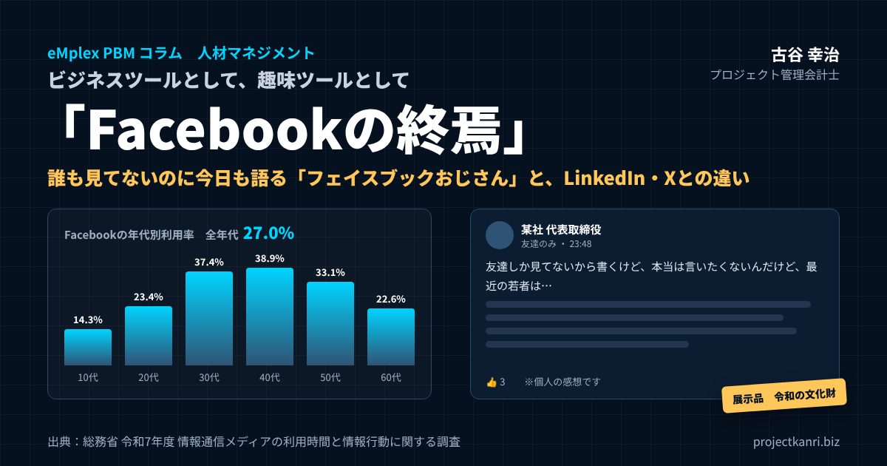

「Facebookの終焉」―ビジネスツールとして、趣味ツールとして。誰も見てないのに今日も語る「フェイスブックおじさん」とFacebook誰もやっていない説

はじめに：誰も見てないのに、今日も語る
プロジェクト管理会計研究所の古谷です。今回は、いつもの管理会計の話から少し離れて、私自身にも耳の痛いテーマを取り上げてみたいと思います。テーマは、Facebookです。
SNSのつぶやきは、年々短くなっています。スタンプ一つ、絵文字一つ、場合によっては「既読」が付くだけで会話が成立する時代です。若い人たちのやり取りを横から見ていると、言葉の量の少なさに驚かされます。それでも、ちゃんと気持ちは通じている。むしろ、言葉を削ることで、余計な誤解を避けているようにすら見えます。
そんな中で、なぜか文字数が減らない場所があります。そう、Facebookです。今日もどこかで、「友達しか見てないから書くけど」「本当は言いたくないんだけど」という前置きとともに、長い独白が投稿されています。誰かの悪口。会社への不満。若者への説教。そして最後に「※個人の感想です」。この様式美は、もはや文化財と呼んでもよいのではないでしょうか。
誰かの悪口。会社への不満。若者への説教。
そして最後に「※個人の感想です」。
──この様式美、もはや文化財である。
最初にお断りしておきます。私は1990年代に社会に出た世代で、Facebookを日常的に使っている側の人間です。エンプレックスでCFOを務めていた頃も、独立してからも、Facebookは仕事の人脈をつなぐ大切な道具でした。ですから、本稿は誰かを笑うための文章ではありません。私自身が「フェイスブックおじさん」になっていないか、自戒を込めて書いています。読み進めながら、ご自身の最近の投稿を思い出していただければ、それで十分です。
なぜ、プロジェクト管理会計のコラムでこのテーマなのか。それは、経営者や管理職の言葉の使い方が、組織の信頼や、取引先からの評価、採用の力にまで、静かに影響しているからです。数字で経営を見える化することと同じくらい、言葉で何を、どこで、どう発信するかは、経営の大切な一部です。そして、その発信の場であるSNSは、ここ十数年で大きく様変わりしました。その変化に気づいているかどうかが、私たちの世代の「見え方」を左右しているのです。
本稿の後半では、視点を少し広げます。ザッカーバーグがFacebookで描いた「世界をオープンにつなぐ」という理想を振り返り、仕事のつながりの場としてのLinkedInやXとの違い、オープンイノベーションのつながりの変化、趣味のつながりの移り変わりを見ていきます。ビジネスツールとしても、趣味ツールとしても訪れた「Facebookの終焉」。その意味を、同じ世代の一人として考えてみたいと思います。
そして最後に、売り込みではなく繋がれる場所として、私たちが作り始めた人脈アプリ「人脈の森」と、そのコミュニティ、ポッドキャストについてもご紹介します。
「Facebook誰もやっていない説」を数字で検証する
まず、事実を確認しておきましょう。最近、若い人と話していると、「Facebookって、まだやってる人いるんですか」と聞かれることがあります。いわゆる「Facebook誰もやっていない説」です。本当に誰もやっていないのでしょうか。
総務省が毎年公表している「情報通信メディアの利用時間と情報行動に関する調査」の令和7年度の報告によれば、主なSNSの利用率（全年代）は、LINEが92.9％、Instagramが54.8％、X（旧Twitter）が44.7％、TikTokが36.7％、そしてFacebookが27.0％です。主要なSNSの中で、Facebookは最も利用率が低いのです。
| 年代 | X | TikTok | LINE | ||
|---|---|---|---|---|---|
| 全年代 | 27.0% | 54.8% | 44.7% | 36.7% | 92.9% |
| 10代 | 14.3% | 69.3% | 56.4% | 67.9% | 96.4% |
| 20代 | 23.4% | 82.6% | 73.4% | 61.5% | 97.7% |
| 30代 | 37.4% | 76.6% | 67.7% | 44.7% | 97.9% |
| 40代 | 38.9% | 67.1% | 57.0% | 42.6% | 96.6% |
| 50代 | 33.1% | 54.4% | 40.2% | 32.2% | 95.6% |
| 60代 | 22.6% | 36.1% | 24.8% | 21.2% | 92.0% |
※出典：総務省「令和7年度 情報通信メディアの利用時間と情報行動に関する調査」
年代別に見ると、さらに興味深いことが分かります。Facebookの利用率は、10代で14.3％、20代で23.4％にとどまります。10代のおよそ7人に1人しか使っていない計算です。最も利用率が高いのは40代の38.9％、次いで30代の37.4％、50代の33.1％です。つまり、Facebookを最も使っている40代でも、利用しているのは4割弱にすぎません。
さらに注目したいのは、すべての年代で、InstagramがFacebookを上回っていることです。50代でさえ、Instagramの利用率は54.4％と、Facebookの33.1％を大きく上回っています。「おじさんの世代はFacebook」というイメージがありますが、実はその世代でも、Facebookはもはや多数派の場所ではないのです。
ですから、「Facebook誰もやっていない説」は、言い過ぎではあるものの、まったくの的外れでもありません。「誰も」ではないけれど、「若い人はほとんどいない」し、「同世代でも半分以上はいない」。これが、数字が示す実態です。
この事実は、Facebookで長文を語る人にとって、二つの意味を持ちます。一つは、読み手が思っているより少ないということです。かつてのように、友人や知人の多くが毎日タイムラインを眺めている、という状況ではなくなっています。もう一つは、それにもかかわらず、読む人は確実にいるということです。しかも、その読み手は、取引先の経営者、元同僚、部下、採用の候補者、そしてそのスクリーンショットを受け取る見知らぬ誰かかもしれません。「誰も見ていない」と「誰が見ているか分からない」は、まったく別のことなのです。
なお、この調査は「利用しているかどうか」を聞いたものであり、どれだけ熱心に投稿しているか、どれだけ頻繁に閲覧しているかまでは表していません。アカウントは持っているけれど、ほとんど開かない。誕生日のお祝いのときだけログインする。そうした「名ばかりの利用者」も、この27.0％の中に含まれていると考えるのが自然でしょう。実際に毎日タイムラインを眺めている人は、さらに少ないはずです。
文字数が減る時代：スタンプと既読で成立する会話
SNSの言葉が短くなっているのは、Facebookの外の世界の話です。LINEでは、スタンプ一つで「了解」も「ありがとう」も「お疲れさま」も伝わります。Instagramでは、写真と短い一言、あるいは24時間で消えるストーリーズでのやり取りが中心です。TikTokでは、言葉よりも映像と音楽が語ります。Xでも、長文よりも短い一言の方が拡散されやすい傾向があります。
若い世代のコミュニケーションを見ていると、言葉を削ることが、思いやりの一つの形になっているようにも感じます。長い文章は、読む人の時間を奪います。重い言葉は、受け取る人に返事の負担を強います。だから、軽く、短く、相手が受け取りやすい形で伝える。スタンプは、言葉の手抜きではなく、相手への配慮でもあるのです。
一方、私たちの世代が若い頃のコミュニケーションの中心は、手紙であり、電話であり、やがて電子メールでした。長い文章を書くことが、誠意の表れだと教わってきた世代です。報告書は詳しく、手紙は丁寧に、思いは言葉を尽くして伝える。その習慣が、SNSの時代になっても、Facebookという場所で生き続けているのかもしれません。
ここに、世代の間の大きなずれがあります。長い文章を書く人は、それを誠意だと思っている。読む側は、それを負担だと感じている。同じ長文が、書き手と読み手でまったく違う意味を持ってしまうのです。
もちろん、長い文章そのものが悪いわけではありません。このコラムも、決して短い文章ではありません。問題は、長い文章を「どこで」「誰に向けて」書くかです。読みたい人が自分から訪れる場所で書く長文と、相手のタイムラインに一方的に流れ込む長文とでは、受け取られ方がまったく違います。
ビジネスの現場でも、同じ変化が起きています。かつては、何ページにもわたる報告書が当たり前でした。今は、一枚の資料、あるいは一つの画面で、要点が伝わることが求められます。経営会議でも、長い説明より、数字と結論が先に示されることが好まれるようになりました。言葉を短くする流れは、SNSだけでなく、仕事の世界全体に広がっているのです。
「友達しか見てない」という最大の勘違い
フェイスブックおじさんの世界観は、おおよそこうです。ここは半分裏の場所である。分かる人だけ分かればいい。空気は読まれるはずだ。だから、少しくらい本音を書いても大丈夫。
しかし、現実は違います。SNSは、空気を読みません。文脈を保存します。スクリーンショットを撮られます。そして、数年後に突然発掘されます。居酒屋で仲間内にこぼした愚痴だと思っていたものが、永久に展示される掲示物になるのです。
| 項目 | 居酒屋の愚痴 | SNSの投稿 |
|---|---|---|
| 残り方 | その場の人の記憶だけ。時間とともに薄れる | 文字がそのまま残る。数年後に発掘される |
| 伝わるもの | 表情・声のトーン・場の雰囲気ごと | 文字だけ。文脈は失われる |
| 広がり方 | その場にいた人まで | スクリーンショットで範囲の外へ |
| 受け取られ方 | 冗談として流されることも | 空気を読まずに、そのまま評価される |
居酒屋の愚痴は、その場にいた人の記憶の中にしか残りません。しかも、その記憶は、時間とともに薄れ、都合よく丸くなっていきます。言った本人の表情や声のトーン、その場の雰囲気も含めて受け取られるので、多少きつい言葉でも、冗談として流されることがあります。ところが、SNSの投稿は、文字だけが、そのままの形で残ります。表情も、声のトーンも、場の雰囲気も伝わりません。そして、書いた本人が忘れた頃に、思いがけない文脈で読み返されます。
公開範囲を「友達」に設定しているから大丈夫、と考える方もいるでしょう。しかし、Facebookの「友達」の中には、取引先の担当者も、元の部下も、数年前に一度会っただけの人も含まれています。そして、そのうちの誰か一人がスクリーンショットを撮れば、投稿は公開範囲の外に出ていきます。「友達しか見ていない」は、技術的には正しくても、現実には成り立たないのです。
この構造を、私たちの世代は、頭では分かっていても、本気では理解していないことが多いように思います。インターネットが社会に広がる前に、言葉の使い方を身につけた世代だからです。言葉は、その場で消えるもの。そういう感覚が、身体のどこかに残っている。だからこそ、意識して、SNSの言葉は残るものだと自分に言い聞かせる必要があるのです。
加えて、Facebookには「過去のこの日」という機能があります。何年も前の投稿が、本人のタイムラインに思い出として表示される機能です。本人が思い出すだけならよいのですが、その投稿を改めてシェアしたり、それを見た友人がコメントを付けたりすると、忘れられていたはずの言葉が、再び人目に触れることになります。SNSの言葉は、自分自身の手によっても、繰り返し掘り起こされるのです。
「本当は嫌だけどね」という魔法の言葉
「本当は言いたくないんだけど」「本当は嫌だけどね」。投稿の冒頭や末尾に添えられるこの一文は、書き手にとっては免罪符のつもりなのでしょう。自分は悪い人ではない。仕方なく言っている。分別はある。そう伝えたい気持ちは、よく分かります。
しかし、SNSでは逆に受け取られます。「嫌だと分かっていて、それでも言っている人」として、しっかり記録されるのです。前置きは、言い訳としては機能せず、むしろ「自覚があったのに書いた」という証拠になってしまいます。
「※個人の感想です」という締めの一文も同じです。個人の感想であることは、読めば分かります。わざわざ書き添えるということは、どこかで「誰かに批判されるかもしれない」と感じている証拠です。その予感があるなら、書かないという選択肢もあったはずです。
優しさのフリをした保身は、
文字になると一番みっともない。
優しさのふりをした保身は、文字になると一番みっともない。これは、なかなか厳しい言葉ですが、真実を突いていると思います。対面の会話であれば、前置きは相手への気遣いとして機能することもあります。しかし、文字だけが残るSNSでは、前置きの裏にある計算が、透けて見えてしまうのです。
経営者や管理職の方に、特に意識していただきたいのは、この「前置き」が、社内でも同じように受け取られているということです。会議で「言いにくいんだけど」と前置きしてから厳しいことを言う。メールで「念のためですが」と書いてから、実は一番言いたいことを書く。前置きは、伝える側の心の負担を軽くしますが、受け取る側には、ときに不誠実に響きます。言うべきことは、前置きなしに、相手の立場に配慮した言葉で、まっすぐ伝える。それが、文字の時代の誠実さだと私は考えています。
前置きの多い文章は、読み手に「この人は、本当は何を言いたいのだろう」という余計な推測を強います。結論を先に、理由を後に。言いにくいことほど、短く、具体的に。これは、ビジネス文書の基本として誰もが教わってきたことです。その基本を、SNSの投稿にも当てはめてみる。それだけで、文章の印象は大きく変わります。前置きを削った文章は、書き手の誠実さを、何よりも雄弁に伝えてくれるのです。
「いいね」の数と、本当に読まれているかは別物
Facebookで長文を投稿する方の多くは、いいねの数やコメントの数を気にしています。いいねが20付いた、コメントが5件付いた。それを、自分の言葉が届いた証拠だと受け取ります。しかし、いいねの数と、本当に読まれているかどうかは、まったく別のものです。
いいねを押してくれるのは、多くの場合、日頃からお付き合いのある数人の方です。その方々は、投稿の中身に共感して押しているとは限りません。関係を保つための挨拶として、あるいは長文を最後まで読まずに、とりあえず押している場合も少なくありません。私自身、正直に申し上げれば、長い投稿を冒頭の数行だけ読んで、いいねを押した経験があります。読者の皆さまにも、覚えがあるのではないでしょうか。
逆に、いいねを押さずに読んでいる人もいます。取引先の担当者、元の部下、採用の候補者。こうした方々は、投稿を読んでも、反応はしません。反応すれば、自分がその投稿を読んだこと、そして賛同したと受け取られかねないからです。黙って読み、黙って評価する。いいねの数に表れない読者こそが、実は投稿の評価を決めているのです。
管理会計の仕事をしていると、目に見える数字と、本当に見るべき数字が違う、という場面によく出会います。売上が伸びていても、利益が出ているとは限らない。受注件数が多くても、採算の良い案件ばかりとは限らない。いいねの数も同じです。表に出ている数字だけを見て安心するのではなく、その数字の裏で何が起きているのかを想像する。それは、経営でもSNSでも、同じように大切な姿勢だと思います。
もう一つ、付け加えておきたいことがあります。SNSの表示の仕組みは、反応の多い投稿を優先して多くの人に届けるように作られていると言われます。反応の少ない長文は、そもそも友達のタイムラインに表示される機会が少なくなっている可能性があります。書き手が「みんなに伝わった」と思っていても、実際には、ほんの一部の人の目にしか触れていない。そして、目に触れた一部の人が、反応しないまま静かに評価している。いいねの少なさは、言葉が届かなかったことと、言葉が届いたうえで距離を置かれたことの、どちらの可能性もあるのです。
なぜFacebookだけ、こんなに痛く見えるのか
では、なぜFacebookの長文だけが、これほど痛く見えてしまうのでしょうか。理由はシンプルで、ずれているからです。
| 本人の感覚 | 実際の場の性質 |
|---|---|
| 匿名のテンションで本音を書く | 実名・顔写真付きの場 |
| 裏話のつもり | 多くの人が行き交う表通り |
| ためになる人生訓 | 誰も求めていない説教 |
| 反応がない＝みんな分かっている | 読まれていない、または反応を控えられている |
一つ目のずれは、実名なのに匿名のテンションであることです。Facebookは、実名での登録を原則とするSNSです。投稿の一つひとつに、本人の名前と顔写真が付いています。ところが、書かれている内容は、匿名の掲示板のような本音や愚痴であることがある。実名で匿名のテンションを出すと、そのギャップがそのまま「痛さ」になります。
二つ目のずれは、公開の場なのに、裏話のつもりであることです。タイムラインは、多くの人が行き交う表通りです。そこで、まるで裏の路地で仲間内に話すような調子で語る。表通りで裏話をしている人は、目立ちます。
三つ目のずれは、誰も求めていないのに人生訓であることです。「若いうちに苦労しろ」「最近の若者は」「仕事とは本来こういうものだ」。経験に裏打ちされた言葉には、価値があるはずです。しかし、求められていない場所で一方的に語られる人生訓は、どれほど内容が正しくても、説教として受け取られます。
四つ目のずれは、反応がないと「みんな分かってるよね」と解釈することです。いいねやコメントが少ないのは、多くの場合、読まれていないか、読まれたうえで反応を控えられているかのどちらかです。しかし書き手は、沈黙を同意だと受け取ってしまう。そして、次の投稿でさらに語る。
これらが合わさると、どう見えるか。「時代が変わったことに気づかないまま、マイクを握り続けている人」です。カラオケボックスで、もう誰も聴いていないのに、マイクを離さずに歌い続けている人の姿を想像していただくと、近いかもしれません。歌っている本人は気持ちよく、周りは曖昧な笑顔で手拍子をしている。その光景が、タイムラインの上で、毎日繰り返されているのです。
念のために付け加えると、これは年齢の問題ではありません。若い人でも、同じずれを抱えた投稿をする人はいますし、年配の方でも、時代に合った見事な発信をしている人はたくさんいます。問題は、年齢ではなく、ずれに気づいているかどうかです。
さらに言えば、Facebookの投稿は、プロフィールの肩書きと一緒に読まれます。「〇〇株式会社 代表取締役」「〇〇部 部長」。その肩書きの下に、愚痴や説教が並んでいる。肩書きが立派であればあるほど、投稿とのギャップは大きくなり、読む人の印象に強く残ります。肩書きは、発信の重みを増す一方で、言葉の責任も重くするのです。
炎上はしない。ただ、静かに評価が下がっていく
Facebookの長文の怖いところは、炎上しないことです。XやTikTokのように、不用意な発言が拡散されて大炎上する、ということは、Facebookではあまり起きません。友達の範囲で投稿され、読む人も限られているからです。叩かれもしません。批判のコメントが付くことも、めったにありません。
ただ、静かに評価が下がっていきます。これが、何より怖いのです。炎上であれば、少なくとも本人は気づきます。謝罪をしたり、投稿を消したりして、立て直すこともできます。しかし、静かな評価の低下には、本人は気づきません。誰も指摘してくれないからです。
私がこれまで200社を超える企業の経営管理を支援してきた中で、何度か、こんな場面に出会いました。ある会社の経営者が、Facebookで取引先への不満や、業界への批判を長文で投稿していた。名前こそ出していないものの、読む人が読めば、どの会社のことか分かる内容でした。その投稿を、取引先の担当者が見ていた。表立っては何も言われませんでしたが、次の案件の相見積もりから、その会社は静かに外されていました。
採用の場面でも、同じことが起きています。今の若い候補者は、応募する前に、会社の経営者の名前で検索し、SNSの発信を確認します。そこで、若者への説教や、社員への不満が書かれた投稿を見つけたら、応募をやめるでしょう。会社には何の連絡もありません。ただ、応募が来ないだけです。
社内でも同じです。部下が上司のFacebookを見ていることは、珍しくありません。そこに、会社や同僚への不満が書かれていたら、部下はどう感じるでしょうか。直接は何も言いません。しかし、その上司の言葉を、以前と同じようには信頼しなくなります。
静かな評価の低下は、数字には表れません。決算書のどこにも記載されません。しかし、受注の機会、採用の力、組織の信頼という、会社の将来を左右する目に見えない資産を、確実に削っていきます。管理会計の言葉で言えば、見えないところで発生している「機会損失」です。見えないからこそ、意識して防がなければならないのです。
経営者の言葉は「信用」という見えない資産である
もう少し、経営の視点からこの問題を考えてみます。経営者の言葉は、会社の信用そのものです。決算書には載りませんが、取引先や金融機関、社員、採用の候補者は、経営者の言葉を通じて、その会社を評価しています。
たとえば、金融機関の担当者が融資の審査の前に経営者の名前を検索することは、今では珍しくありません。そこで、業界への批判や、取引先への不満を長々と書いた投稿が見つかったら、どう感じるでしょうか。数字が良くても、この経営者は感情で動く人なのではないか、トラブルを抱えやすい会社なのではないか、という印象を持たれても不思議ではありません。
IPOを目指す会社であれば、なおさらです。上場準備の過程では、経営者の資質や、ガバナンスへの姿勢が厳しく問われます。経営者が個人のSNSで、社内の事情や未公表の情報をほのめかすような投稿をしていれば、それだけで内部管理体制への疑問につながりかねません。私がIPOの準備を支援する際には、経営者のSNSの発信の仕方についても、早い段階で確認していただくようにしています。
信用は、積み上げるのには長い時間がかかりますが、失うのは一瞬です。そして、SNSの投稿による信用の目減りは、一瞬で起きるのではなく、気づかないうちに少しずつ進みます。だからこそ、経営者は、自分の言葉を会社の資産として扱う意識を持つ必要があるのです。
若者はなぜ、こんな投稿をしないのか
では、若い世代は、なぜこうした投稿をしないのでしょうか。若者が賢いからではありません。臆病だからでもありません。彼らは、知っているのです。
言葉は切り取られる。声は人格を固定する。長文は責任になる。若い世代は、物心がついた頃から、SNSの中で、誰かの言葉が切り取られ、拡散され、その人の人格そのものとして扱われる光景を見て育ってきました。一度の不用意な発言が、その人の一生のレッテルになることもある。その怖さを、肌で知っているのです。
だから彼らは、言葉を削り、感情を薄め、痕跡を残さない。24時間で消えるストーリーズを使う。限られた友人だけが見られる鍵付きのアカウントを使い分ける。本音は、信頼できる少人数のグループの中だけで話す。公開の場では、当たり障りのない写真と、短い一言だけを残す。
言葉は切り取られる。声は人格を固定する。長文は責任になる。
だから彼らは、言葉を削り、感情を薄め、痕跡を残さない。
沈黙は、逃げではなく戦略だ。
沈黙は、逃げではなく戦略です。これは、とても大切な視点だと思います。私たちの世代は、黙っていることを、意見がない、主体性がない、と受け取りがちです。しかし、若い世代にとって、公開の場での沈黙は、自分を守り、相手を傷つけないための、成熟した選択なのです。
管理職の方は、職場でもこの違いを意識しておくとよいでしょう。会議で若手が発言しないのは、意見がないからとは限りません。発言が記録され、評価に結び付き、人格として固定されることを警戒しているのかもしれません。発言を求めるなら、まず、発言しても大丈夫だという安心感、いわゆる心理的安全性をつくることが先です。若い世代の沈黙を責めるのではなく、沈黙の理由を理解することが、世代を越えたコミュニケーションの出発点になります。
一方で、若い世代から私たちの世代が学べることもあります。言葉は、少ないほうが伝わることがある。発信する場所と相手を選ぶ。公開の場と、信頼できる場を使い分ける。これらは、SNSの時代を生きるうえでの、とても実践的な知恵です。
私の会社にも、若いメンバーがいます。彼らと話していて感じるのは、SNSの使い方が驚くほど慎重で、しかも合理的だということです。仕事の情報は、仕事用のアカウントで。友人とのやり取りは、限られたグループで。公開の場には、自分の専門や関心を示す情報だけを置く。場所ごとに、自分の見せ方を意識的に設計しているのです。私たちの世代が、一つのアカウントに仕事も私生活も愚痴も混ぜて書いているのとは、まるで違う発想です。
文字数が減る時代に、なぜ語り続けるのか
ここまで、少し厳しいことも書いてきました。しかし、私は、フェイスブックおじさんたちが悪いとは思っていません。彼らは、ただ疲れているのです。
会社では言えない。家庭でも言えない。評価されない。でも、承認は欲しい。その最後の逃げ場が、Facebookだったのではないでしょうか。だから語る。誰も聞いていなくても語る。むしろ、聞かれないからこそ語る。
40代、50代の会社員は、組織の中で板挟みの立場にいることが多いものです。上からは成果を求められ、下からは配慮を求められる。昔のように、上司に飲みに連れて行ってもらって愚痴を聞いてもらう機会も、部下を飲みに誘って本音を語る機会も、減りました。家庭では、仕事の話をしても、なかなか理解してもらえない。自分の頑張りや、自分なりの考えを、誰かに聞いてほしい。その気持ちは、とても自然なものです。
経営者の孤独も同じです。経営者は、社員の前で弱音を吐けません。取引先にも、金融機関にも、本音は言えません。その孤独の中で、Facebookのタイムラインは、自分の考えを外に出せる数少ない場所になります。
こう考えると、フェイスブックおじさんの問題は、個人の問題であると同時に、組織の問題でもあることが分かります。社員が会社の中で語れる場がない。頑張りが評価されている実感がない。自分の考えを聞いてもらえる機会がない。その満たされない思いが、SNSに流れ出しているのです。
私がプロジェクト管理会計で、案件ごとの採算や、社員一人ひとりの工数を見える化することにこだわってきた理由の一つは、ここにあります。頑張りが数字で見えれば、正しく評価される。評価されれば、承認の欲求は、職場の中で満たされる。誰も見ていないタイムラインに向かって語る必要は、少しずつ減っていくはずです。会社は、社員が語れる場と、正しく評価される仕組みを持つことで、SNSに流れ出す言葉を、組織の力に変えることができるのです。
承認されたい、という気持ちそのものは、年齢に関係なく、誰もが持っている自然な欲求です。問題は、その欲求を満たす場所が、誰が読んでいるか分からないタイムラインしかない、という状況にあります。満たされない思いを抱えたまま、反応の少ない投稿を重ねていけば、承認の欲求はますます強くなります。そして、より強い言葉、より長い文章で、注目を集めようとしてしまう。これは、本人にとっても、決して幸せな循環ではありません。
経営者・管理職がSNSで発信する前の5つのチェック
では、私たちの世代は、SNSでの発信をやめるべきなのでしょうか。私は、そうは思いません。経験を積んだ人の言葉には、やはり価値があります。大切なのは、時代に合った形で発信することです。私自身が投稿の前に意識している、五つのチェックをご紹介します。
| チェック | 問いかけ |
|---|---|
| ① 時間 | 3年後に読まれても、胸を張っていられるか |
| ② 取引先 | 取引先の社長が読んで、信頼が上がるか |
| ③ 部下・採用 | 部下や候補者が、一緒に働きたいと思うか |
| ④ 切り取り | 一文だけ切り取られても誤解されないか |
| ⑤ 主語 | 主語は他人（批判）ではなく自分（経験・学び）か |
※一つでも引っかかったら、下書きのまま一晩寝かせる。
一つ目は、「3年後に読まれても大丈夫か」です。SNSの投稿は、書いた瞬間ではなく、読まれた瞬間に評価されます。3年後、自分の立場や相手との関係が変わったときに、この投稿が掘り起こされても、胸を張っていられるか。そう自問するだけで、多くの勢いだけの投稿は思いとどまれます。
二つ目は、「取引先の社長が読んでも大丈夫か」です。取引先、顧客、金融機関。仕事の関係者が読んだときに、自社や自分への信頼が上がる投稿か、下がる投稿か。特に、どこかの会社や人を批判する内容は、名前を伏せていても、読む人が読めば分かります。
三つ目は、「部下や採用の候補者が読んでも大丈夫か」です。社内の誰かへの不満、若者への説教、仕事観の押しつけ。部下や、これから入社を考えている人が読んだときに、一緒に働きたいと思ってもらえる投稿か。
四つ目は、「スクリーンショットで切り取られても大丈夫か」です。投稿の一部だけが切り取られ、前後の文脈なしに拡散されたとき、誤解を招かないか。長文ほど、切り取られやすい一文が紛れ込みます。
五つ目は、「主語は自分か」です。誰かを批判する投稿は、主語が他人になります。自分の経験、自分の学び、自分の失敗を語る投稿は、主語が自分です。主語が自分の投稿は、読む人の共感を呼び、批判の的になりにくい。同じ出来事でも、「あの人がこうだった」ではなく、「私はこう感じ、こう学んだ」と書くだけで、受け取られ方はまったく変わります。
この五つのチェックのうち、一つでも引っかかったら、その投稿は、下書きのまま一晩寝かせてください。翌朝読み返して、それでも投稿したいと思えるなら、投稿すればよいのです。多くの場合、翌朝には、投稿しなくてよかったと思うはずです。
会社としてのSNSとの向き合い方：ガイドラインと「語れる場」
個人の心がけに加えて、会社としてできることもあります。私が支援先でお勧めしているのは、二つの取り組みです。
一つ目は、SNSの利用に関するガイドラインを定めることです。社員が個人のアカウントで発信することを禁止する必要はありません。むしろ、社員一人ひとりの発信は、会社の魅力を伝える力にもなります。大切なのは、守るべき最低限のルールを、分かりやすく示すことです。取引先や顧客の情報、社内の未公表の情報を書かない。特定の個人や会社を誹謗中傷しない。会社の公式な見解と誤解されるような書き方をしない。困ったときに相談できる窓口を設ける。こうしたルールを、禁止事項の羅列ではなく、「社員と会社を守るための約束」として共有することが大切です。
経営者や役員には、一般の社員よりも、一段高い水準の配慮が求められます。経営者の発信は、個人のアカウントであっても、会社の発信として受け取られるからです。上場を目指す会社であれば、経営者のSNSでの発言が、未公表の情報の漏洩や、市場への不適切な影響として問題になる可能性もあります。経営者自身が、ガイドラインの最初の対象者であるという意識を持つことが必要です。
二つ目は、社内に「語れる場」をつくることです。先ほど述べたように、SNSでの長文の独白の背景には、職場の中で語れない、聞いてもらえないという思いがあります。上司と部下の1on1のミーティング、部署を越えた少人数の対話の場、経営者が社員の声を直接聞く機会。社員が自分の考えや悩みを安心して話せる場があれば、その思いはSNSではなく、職場の改善のエネルギーとして生かされます。
そして、頑張りを正しく評価する仕組みです。誰が、どの仕事に、どれだけの時間を使い、どんな成果を上げたのか。プロジェクトごとの数字と、一人ひとりの工数と成果を見える化し、評価に結び付ける。承認の欲求を職場の中で満たせる会社は、社員がSNSで語る必要のない会社でもあります。eMplex PBMで私たちが目指しているのも、数字を通じて、社員一人ひとりの頑張りが正しく見える組織づくりです。
SNSガイドラインを定める際には、作って終わりにしないことも大切です。年に一度は内容を見直し、新しいSNSの登場や、社内で起きた事例を反映させる。新入社員の研修だけでなく、管理職の研修でも取り上げる。特に管理職には、自分の発信が部下からどう見えているかを考える機会を持っていただきたいと思います。ガイドラインは、若手を縛るためのものではなく、むしろ私たちの世代が、時代とのずれに気づくための道具でもあるのです。
評価の仕組みというと、大げさに聞こえるかもしれません。しかし、出発点はとても小さなことです。上司が、部下の仕事を見ていると伝えること。プロジェクトが終わったときに、誰がどう貢献したかを振り返る場を持つこと。そして、その振り返りを、感覚ではなく、工数や採算という事実に基づいて行うこと。事実に基づいて認められた経験は、SNSのいいねよりも、ずっと深く人の心を満たします。
それでも書くなら：時代に合った「語り方」
最後に、それでも語りたいという方へ。私は、語ること自体を否定するつもりはありません。経験を積んだ人の言葉には、若い世代にはない深みがあります。その言葉が、時代に合った形で届けば、多くの人の役に立つはずです。
時代に合った語り方の第一は、短く、具体的に語ることです。人生訓を長々と語るより、一つの具体的なエピソードを短く語る。抽象的な教訓より、「あの時、私はこう失敗して、こう立て直した」という具体的な話のほうが、読む人の心に残ります。
第二は、前向きに語ることです。不満や批判ではなく、学びや感謝や、これからの挑戦を語る。同じ出来事でも、前向きな切り口で語れば、読む人に勇気や気づきを与える投稿になります。
第三は、実名の価値を生かすことです。実名のSNSは、裏話をする場所としては不向きですが、自分の専門性や経験を発信して信頼を積み上げる場所としては、実はとても強い力を持っています。業界の動向についての自分なりの見方、仕事で得た知見、お客様との仕事から学んだこと。実名で、責任を持って、価値のある情報を発信し続ける人は、確実に信頼を得ていきます。
第四は、長い文章を書く場所を選ぶことです。どうしても長く語りたいことがあるなら、タイムラインではなく、ブログや、noteのような長文の発信の場、あるいは自社のコラムで書く。読みたい人が自分から訪れる場所で書く長文は、押しつけではなく、価値のある情報として受け取られます。私がこうしてコラムという形で長い文章を書いているのも、読みたい方が読みに来てくださる場所だからです。
長く語りたいことは、
読みたい人が訪れる場所で語る。
私自身、Facebookへの投稿は、ここ数年で大きく変わりました。かつては、思ったことをそのまま長く書くこともありました。今は、コラムの更新のお知らせや、セミナーの案内、仕事で得た小さな気づきを、短く書くことがほとんどです。長く語りたいことは、このコラムに書く。そう決めてから、投稿する前に迷うことが減り、読んでくださる方からの反応も、むしろ増えたように感じています。
時代に届いている「上手な大人の発信」の共通点
ここまで、うまくいかない発信の話を中心にしてきましたが、私の周りには、Facebookやその他のSNSを見事に使いこなしている同世代の経営者もたくさんいます。そうした方々の発信には、いくつかの共通点があります。
第一に、他人ではなく、自分の失敗を語っています。「若い頃、こんな見積もりの失敗をして、大きな赤字を出した。そこから学んだのは…」。自分の失敗を率直に語る経営者の投稿は、読む人に安心感と学びを与えます。他人の失敗を語る投稿とは、正反対の印象を残します。
第二に、感謝を具体的に語っています。「今日の打ち合わせで、〇〇さんから教えていただいた考え方が、とても参考になりました」。名前を出してよいかを確認したうえで、具体的に感謝を伝える。こうした投稿は、相手との関係を深め、読む人にも温かい印象を与えます。
第三に、若い世代の挑戦を応援しています。説教ではなく、応援です。若手社員の成長を紹介する。若い起業家の取り組みを紹介する。上の世代が若い世代を応援する姿は、世代を越えて共感を呼びます。
第四に、投稿の頻度と長さに節度があります。毎日のように長文を書くのではなく、伝えたいことがあるときに、伝わる長さで書く。読む人の時間を大切にする姿勢が、投稿の一つひとつから伝わってきます。こうした発信を続けている方は、実際に仕事の相談や紹介につながることも多いと伺います。実名のSNSは、使い方次第で、大人にとって最も強い信用の道具になるのです。
ザッカーバーグが描いた「世界をオープンにつなぐ」という理想
ここで少し視点を変えて、Facebookがそもそも何を目指して生まれたのかを振り返っておきたいと思います。「Facebookの終焉」を語るには、まず、Facebookが何を始めたのかを知っておく必要があるからです。
マーク・ザッカーバーグが2004年に大学の寮で始めたFacebookは、当初、学生同士をつなぐ名簿のようなサービスでした。そこから世界最大のSNSへと成長する過程で、彼が一貫して掲げてきたのが、「世界をよりオープンにし、人々をつなげる（Make the world more open and connected）」というビジョンです。単なる連絡の道具や娯楽をつくるのではなく、社会のコミュニケーションの基盤そのものを作り替える。そうした大きな構想が、出発点にありました。
| 軸 | 目指したこと | 主な取り組み |
|---|---|---|
| ① 実名による信頼 | 匿名ではなく、現実の信頼をもとにしたつながり。個人に発信の力を | 実名登録を原則とするSNS |
| ② 全人類をつなぐ基盤 | 国境や格差を越えて、誰もがつながれるデジタル空間 | Internet.org（2013年〜） |
| ③ コミュニティ | 関心や目的を共有し、孤立を防ぎ合える場 | ミッションの更新（2017年）、グループ機能 |
| ④ その場にいる感覚 | 画面越しから、同じ空間にいるような体験へ | 社名をMetaに変更（2021年）、メタバース |
一つ目の軸は、実名による信頼のつながりです。それまでのインターネットは、匿名で発言する場所が中心でした。Facebookは、現実の友人関係や信頼をもとにした実名のネットワークを目指しました。個人が実名で自由に発信し、共有できる場をつくることで、マスメディアや権力に偏っていた情報発信の力を、個人の手に取り戻す。そうした思想が根底にあったと言われます。
二つ目の軸は、全人類をつなぐ基盤です。国境や経済的な格差を越えて、地球上のあらゆる人がつながれるデジタル空間をつくる。2013年に始まったInternet.orgの取り組みでは、インターネットが普及していない地域に接続を届けることを目指し、無人航空機や衛星の活用まで構想されました。一つのアプリの運営ではなく、人類をつなぐインフラを目指していたことがうかがえます。
三つ目の軸は、コミュニティです。2017年、Facebookはミッションを「コミュニティをつくる力を人々に与え、世界をより近づける（Give people the power to build community and bring the world closer together）」へと改めました。ただつながるだけでなく、関心や目的を共有する人々が集まり、互いの孤立を防ぎ合える場をつくる。つながりの「量」から「質」への転換だったと言えるでしょう。
四つ目の軸は、画面越しのつながりから、その場にいる感覚へ、という進化です。文字や写真や動画による画面越しのつながりには限界がある。VRやARの技術を使って、まるで同じ空間に一緒にいるような体験をつくる。この構想の延長線上で、2021年、会社の名前はFacebookからMetaへと変わりました。
こうして振り返ると、ザッカーバーグの根底にあるのは、「人の力や可能性は、他者とつながることで最大化する」という強い信念です。学生の名簿から、全人類をつなぐSNSへ、そしてメタバースへ。形を変えながらも、目指し続けているのは、人と人とのつながりを最大化する世界なのだと思います。
仕事でのつながりとしてのFacebook：「友達申請」が名刺交換の続きだった時代
では、その理想は、私たちの仕事の現場で、どのように実現していたのでしょうか。振り返ると、Facebookが仕事のつながりの中心にあった時代が、確かにありました。
2010年代の前半から半ばにかけて、ビジネスの場で名刺を交換すると、その日の夜にFacebookの友達申請が届く、というのが一つの作法になっていました。名刺はその場限りの紙ですが、Facebookでつながれば、相手の近況が分かり、メッセンジャーで気軽に連絡が取れる。実名で、顔写真があり、共通の友人が表示される。相手がどんな人なのかを、名刺よりもずっと多くの情報で知ることができました。
私自身、独立してから多くの経営者や専門家と出会いましたが、その出会いの多くはFacebookで維持されていました。セミナーの告知も、勉強会の参加者募集も、Facebookのイベント機能とグループで行うのが当たり前でした。投稿にコメントが付き、そこから会食の約束が生まれ、仕事の相談につながる。実名の信頼をもとにつながるというザッカーバーグの理想は、日本のビジネスの現場で、ある時期、見事に機能していたのです。
しかし、その仕組みには、最初から一つの弱点がありました。仕事のつながりと私生活のつながりが、同じ一つのタイムラインに混ざってしまうことです。取引先の社長と、学生時代の友人と、親戚と、元の部下が、同じ「友達」として並ぶ。家族旅行の写真の隣に、業界への意見が並び、その隣に深夜の愚痴が並ぶ。仕事の相手に見せる顔と、友人に見せる顔の区別がつかない場所。それが、Facebookでした。
この混在こそが、本稿で述べてきた「痛さ」の温床です。仕事の顔で読まれるべき場所に、私生活の顔のまま書いてしまう。そして、時代が進むにつれて、仕事のつながりは、より目的のはっきりした場所へと移っていきました。その代表が、LinkedInとXです。
LinkedInとの違い：「職務経歴」でつながる場所
LinkedInは、仕事のためのSNSです。プロフィールの中心にあるのは、家族や趣味の写真ではなく、職務経歴、スキル、資格、実績です。つながる目的も、最初から仕事に限られています。LinkedInでつながりを申請されたとき、相手が自分に何を期待しているのかは、おおよそ見当がつきます。採用の打診、商談の相談、業界の情報交換。目的がはっきりしているので、つながる側も、迷いがありません。
Facebookとの一番の違いは、「何者として」つながるのかが明確なことです。Facebookでは、私は古谷幸治という一人の人間としてつながります。LinkedInでは、プロジェクト管理会計士として、株式会社プロジェクト・イノベーションの代表としてつながります。発信する内容も、それに合わせて仕事の知見や業界の動向が中心になり、読む側も、それを前提に読みます。私生活の愚痴が紛れ込む余地は、構造的に小さいのです。
もう一つの違いは、つながりの使われ方です。LinkedInは、採用担当者や転職を考える人、海外の取引先との接点として使われることが多く、人材の流動化とともに存在感を増してきました。日本では、欧米ほどの利用者の広がりはまだありませんが、外資系企業やIT企業、グローバルに仕事をする人を中心に、仕事のつながりの「正式な窓口」としての地位を固めつつあります。
経営者の視点で言えば、LinkedInは、会社と自分の専門性を、仕事の文脈で伝えるための場所です。採用の候補者は、経営者や社員のLinkedInを見て、その会社で働く人の専門性や仕事への姿勢を確かめます。Facebookで深夜の愚痴を読まれるのとは、正反対の評価のされ方です。
Xとの違い：「関心」でつながる場所
一方のX（旧Twitter）は、関心でつながる場所です。Facebookのつながりが、互いに承認し合う「友達」であるのに対し、Xのつながりは、一方向の「フォロー」が基本です。相手と知り合いである必要はありません。その人の発信に関心があれば、フォローする。関心がなくなれば、外す。つながりは軽く、流動的です。
Xでは、実名である必要もありません。専門分野の知見を発信する人の中には、ハンドルネームで活動している人も多くいます。そこで評価されるのは、肩書きや人間関係ではなく、発信の中身そのものです。役に立つ情報、鋭い視点、分かりやすい解説。中身が良ければ、見知らぬ人にまで広がっていきます。逆に、不用意な発言は、あっという間に拡散され、炎上します。
Facebookとの違いを一言で言えば、Facebookは「誰とつながっているか」の場所であり、Xは「何を発信しているか」の場所です。仕事の情報を早く得たい、新しい人と出会いたい、自分の専門性を広く知ってもらいたい。そうした目的には、Xのほうが向いています。業界の最新の話題も、新しいサービスの発表も、いまやXで最初に流れることが少なくありません。
| 項目 | X | ||
|---|---|---|---|
| つながりの単位 | 相互承認の「友達」 | 仕事上の「つながり」 | 一方向の「フォロー」 |
| 何でつながるか | 人間関係（誰を知っているか） | 職務経歴・専門性 | 関心・発信の中身 |
| 実名 | 原則として実名 | 実名・肩書きが前提 | 匿名・ハンドルネームも可 |
| 主な発信内容 | 近況・私生活・仕事が混在 | 仕事の知見・実績・採用 | 情報・意見・速報 |
| 新しい出会い | 起きにくい（知り合い中心） | 目的があれば起きやすい | 起きやすい（拡散力） |
| 主なリスク | 公私の混在、静かな評価の低下 | 形式的になりやすい | 切り取り・炎上 |
※筆者の実務経験にもとづく整理です。
三つを並べてみると、仕事のつながりにおけるFacebookの立ち位置が見えてきます。目的のはっきりした仕事のつながりはLinkedInへ、関心でつながり情報を得る場はXへ。かつてFacebook一つで担っていた役割が、それぞれの得意な場所へと分かれていきました。Facebookに残ったのは、昔からの知り合いとの、緩やかなつながりだけです。
オープンイノベーションのつながりとして、Facebookは終焉した
私がこのテーマで最も強く感じているのは、オープンイノベーションのつながりとしての、Facebookの役割の変化です。結論から申し上げます。オープンイノベーションのつながりとしては、Facebookは終焉したと私は考えています。
オープンイノベーションとは、自社の外にある技術やアイデア、人材を取り込み、新しい価値を生み出す取り組みです。大企業とスタートアップ、企業と大学、異なる業種の企業同士。立場の違う人々が出会い、つながり、一緒に何かを始める。その出会いの場として、2010年代のFacebookは、たしかに大きな役割を果たしていました。ピッチイベントの後に友達申請を送り合い、グループで情報を交換し、メッセンジャーで次の打ち合わせを決める。オープンイノベーションの最初の一歩は、しばしばFacebookの上で踏み出されていました。
しかし今、その場は大きく様変わりしています。イベントの告知と参加の管理は、専用のイベント管理サービスへ。コミュニティの運営は、SlackやDiscordのような、目的ごとに集まるチャットの場へ。出会った人とのつながりは、LinkedInへ。自分たちの取り組みの発信は、Xやnote、自社のサイトへ。オープンイノベーションに関わる若い起業家や研究者と話していて、Facebookでつながりましょう、と言われることは、ほとんどなくなりました。
なぜ、Facebookはこの役割を失ったのでしょうか。理由は三つあると考えています。一つ目は、若い世代がいないことです。冒頭のデータのとおり、20代のFacebookの利用率は23.4％にすぎません。オープンイノベーションの担い手であるスタートアップの若い起業家や研究者と出会う場所として、Facebookは機能しなくなっています。
二つ目は、開かれていないことです。オープンイノベーションに必要なのは、知らない人との出会いです。しかし、Facebookのつながりは、基本的に「すでに知っている人」との相互承認です。見知らぬ人の投稿が目に留まり、そこから新しい関係が生まれる、という広がり方は、XやLinkedInのほうがはるかに得意です。「世界をよりオープンに」というビジョンを掲げたFacebookが、いつの間にか、閉じた知り合いの輪の中の場所になってしまった。これは、なんとも皮肉なことです。
三つ目は、仕事と私生活が混ざっていることです。新しい協業の相手を探すとき、人は相手の専門性や実績を知りたいと思います。しかし、Facebookのタイムラインに並んでいるのは、食事の写真や家族の話題、そして時々の長文の独白です。協業の相手としての判断材料を得るには、あまりにも雑音が多いのです。
オープンイノベーションを本気で進めたい経営者の方には、つながる場所を見直すことをお勧めします。Facebookの友達の数ではなく、LinkedInやXで、自社が何者で、何を求めているのかを、明確に発信する。業界を越えたコミュニティに、自ら参加する。新しいつながりは、新しい場所でしか生まれません。
趣味ツールとしてのFacebook：主役の座はほかへ移った
では、ビジネスではなく、趣味のつながりとしてはどうでしょうか。ここでも、主役の座は、すでにほかの場所へと移っています。
写真や日常の共有は、Instagramへ。冒頭のデータのとおり、すべての年代で、InstagramはFacebookの利用率を上回っています。動画を楽しむならYouTubeやTikTokへ。友人や家族との日々の連絡はLINEへ。ゲームやアニメ、趣味の仲間とのやり取りはDiscordへ。かつてFacebookが一手に担っていた「趣味でつながる」役割も、目的ごとの場所へと分かれていきました。
もちろん、Facebookのグループ機能は、今も一部の趣味のコミュニティで活発に使われています。地域の集まり、同窓会、特定の趣味の愛好家のグループ。年齢層の高い参加者が多いコミュニティでは、今もFacebookが便利な連絡の場になっています。しかし、それは「みんなが集まる広場」ではなく、「昔からの仲間が集まる部屋」です。新しい仲間が次々と加わる場所ではなくなっているのです。
ビジネスツールとしても、趣味ツールとしても、Facebookは「みんながいる場所」ではなくなりました。私が本稿のタイトルに「Facebookの終焉」と掲げたのは、Facebookというサービスがなくなるという意味ではありません。Facebookが、社会のつながりの中心であった時代が終わった、という意味です。そして、その事実に気づかないまま、かつての広場に向かって語り続けている姿が、フェイスブックおじさんなのです。
理想を掲げた創業者自身は、変わり続けている
最後に、もう一度ザッカーバーグの話に戻ります。興味深いのは、Facebookを生んだ創業者自身が、Facebookにとどまってはいないということです。
写真の共有が広がればInstagramを買収し、メッセージのやり取りが広がればWhatsAppを買収しました。そして、画面越しのつながりに限界を感じると、会社の名前からFacebookを外し、Metaとしてメタバースへと舵を切りました。その後は、人工知能への投資にも大きく力を入れています。ザッカーバーグが一貫して追い求めてきたのは、「人と人とのつながりを最大化する」というビジョンであって、Facebookという一つのサービスではなかったのです。
ここに、本稿のテーマの核心があると私は思います。「世界をオープンにつなぐ」という理想を掲げた創業者は、時代に合わせて、つながりの形を変え続けてきました。一方で、その理想の上に生まれたタイムラインでは、今日も、変わらないままの独白が続いています。変わり続けた創業者と、変わらなかった利用者。そのコントラストこそが、「Facebookの終焉」の正体なのかもしれません。
実名による信頼という、Facebookの最大の長所も、使い方を誤れば、最大の弱点になります。実名だからこそ、言葉は人格として残り、仕事の評価に結び付く。ザッカーバーグが目指した「信頼あるつながり」を本当に生かすのであれば、私たち利用者の側も、実名の重みにふさわしい発信の仕方へと、自分を更新していく必要があるのです。
売り込みではなく、「繋がれる場所」があるべきだ
ここまで、Facebookの終焉について述べてきました。では、Facebookに代わる場所はどこにあるのでしょうか。正直に申し上げると、私はまだ、その答えになる場所を見つけられていません。
LinkedInは、仕事のつながりの窓口としては優れています。しかし、実際に使ってみると、タイムラインには自己アピールと売り込みがあふれています。誰もが自分の実績を語り、自分のサービスを売り込み、目立とうとしている。目立ちたい人同士が、互いの主張をぶつけ合っても、そこに本当のつながりは生まれません。名刺を投げ合っているだけで、誰も相手の話を聞いていないのです。
Xは、情報を得る場所としては優秀です。しかし、つながりは基本的に一方通行です。フォローする人と、される人。発信する人と、受け取る人。そこには、互いに支え合う関係や、誰かが誰かを紹介する流れは、なかなか生まれません。
そしてFacebookは、昔からの知り合いが集まる、閉じた部屋になりました。新しい出会いも、新しいご縁も、そこからはほとんど生まれません。
では、本当に必要なのは、どんな場所でしょうか。私が考えるのは、売り込みではなく、繋がれる場所です。そこには、ご縁の中心となる人がいます。いつも誰かと誰かを繋いでいる人、相談すれば必ず誰かを紹介してくれる人です。そして、その人のまわりに、自然と人が引き寄せられていく。「この人の周りは、なんだか面白そうだ」。そう感じた人が集まり、紹介が紹介を呼び、思いもよらない組み合わせから、新しい仕事や挑戦が生まれる。
それこそが、オープンイノベーションの世界だと私は思います。オープンイノベーションは、イベントで名刺を大量に交換することでも、SNSで自己アピールを競うことでもありません。信頼できる人が、信頼できる人を紹介する。その連鎖の中から、立場や業種を越えた協業が生まれていく。必要なのは、目立つ人ではなく、繋ぐ人が評価される場所なのです。
こんな場所があったら、こんなアプリがあったら。そう考え続けているうちに、ある日、こう思いました。「ないなら、作ってしまおうか」。
ないなら作ろう：人脈を資産として育てる「人脈の森」
そうして生まれたのが、「人脈の森」というアプリです。人との繋がりを、資産として育てる。それが、人脈の森のテーマです。
出発点にあったのは、私自身が長年感じてきた課題でした。名刺は増えるのに、関係は静かに死んでいく。CFOとして、経営企画として、そして独立してから200社を超える企業の支援を通じて、私は数えきれないほどの方と名刺を交換してきました。しかし、その名刺のうち、今も関係が続いている方は、ほんの一部です。せっかくの出会いも、活かされなければ、ただのデータにすぎません。
多くの方が、同じ悩みを抱えているのではないでしょうか。名刺は溜まるのに、活かせない。誰に何を相談すればよいのか、分からなくなる。気づけば連絡が途絶えている関係があり、紹介できたはずのご縁に、後から気づいても手遅れになっている。そして、「今月、誰と会うべきか」「誰と誰を繋げば価値が生まれるか」を判断する材料がない。人脈の森は、この「もったいない」をなくすために作りました。
人脈の森の考え方は、名前のとおり、人脈を森として捉えることにあります。人脈は、金庫にしまっておく資産ではなく、手をかけて育てる森です。出会いは種、関係は根、信頼は幹、コラボは花、成果は果実。森は、育てるほど豊かに循環していきます。
| 段階 | 状態 | 人脈の森での意味 |
|---|---|---|
| 🌱 種 | 新しい出会い・名刺の登録 | これから育てる関係 |
| 🌿 若葉 | 最近繋がった・関係を形成中 | 接点を重ねて育てる時期 |
| 🌳 幹 | 長期的な信頼関係 | いつでも相談できる関係 |
| 🌸 花 | コラボ・共創・紹介が発生 | ご縁が新しい価値を生む |
| 🍎 果実 | 成果・案件・プロジェクトの完了 | 関係が実を結んだ状態 |
| 🍂 落葉 | 交流が途絶えた関係 | 連絡を取り直すきっかけ |
※成約・紹介の実績、最後の接点からの経過日数をもとにルールで判定します。
一人ひとりとの関係は、森の中で成長段階として表されます。新しく出会った人は種、最近繋がって関係を育てている人は若葉、長く信頼し合える人は幹、一緒に何かを生み出したり紹介し合ったりしている人は花、具体的な成果やプロジェクトにつながった人は果実。そして、交流が途絶えてしまった関係は、落葉として気づかせてくれます。成長段階は、成約や紹介の実績、最後に会ってからの日数をもとに、ルールで判定されます。
プロジェクト管理会計の仕事をしている私にとって、この発想はごく自然なものでした。プロジェクトの採算は、見える化しなければ管理できません。人脈も同じです。誰と、どんな関係にあり、その関係が育っているのか、枯れかけているのか。見えるようにすれば、次に打つべき手が分かります。人脈の森は、いわば人間関係の「管理会計」なのです。
そして、人脈の森の根底にある考え方が、「応援される人とは、誠実な人」ということです。人脈を広げるために必要なのは、自己アピールの上手さではありません。約束を守り、受けた恩を返し、人と人を誠実に繋ぐこと。人脈の森は、そうした誠実さが資産として積み上がり、与える人が正しく評価される仕組みを目指しています。
人脈の森でできること：「増やす」から「活かす」へ
人脈の森の機能を、簡単にご紹介します。目指しているのは、人脈を「増やす」ことではなく、「活かす」ことです。
中心にあるのが、「人脈3表」です。決算書に財務3表があるように、人脈にも3つの表を用意しました。一つ目は、今週のアクションの表です。今週やるべきこと、今週のコンタクトの目標人数、アプローチの予定のリストが並び、「誰と会うべきか」を考える時間をなくします。二つ目は、人脈の質の表です。関係の濃さのランキング、感謝ポイント、紹介のつながりを示すネットワーク図で、関係の質を見える化します。三つ目は、データの健全性の表です。重複データや同姓同名の候補を自動で見つけ、名刺の情報の変更を記録し、データ全体をバックアップできます。
| 機能 | 内容 |
|---|---|
| 人脈3表 | 今週のアクション／人脈の質／データの健全性の3つの表で、次の一手を見える化 |
| 森マップ | 会社別・個人別・職種別・サービス提案別の4つのモードで人脈を俯瞰 |
| 関係濃度スコア | 接触の頻度や紹介の実績から関係の強さを自動で採点し、アプローチすべき人を表示 |
| 感謝ポイント・紹介者ランキング | 紹介を「贈っている」「受け取っている」に分けて集計し、感謝を返すべき相手を可視化 |
| 紹介ネットワーク図 | 誰が誰を紹介したかを線で結んで表示 |
| おまかせマッチング | 業界・職種をまたいだ組み合わせをルールに基づいて提案 |
| アプローチ予定リスト・リマインド | 次のコンタクト予定日が近い順に表示。今月末・翌月末などをワンクリックで設定 |
| カレンダー・日報 | その日会った人を自動で集約する、人脈版の振り返り日記 |
| 連携・データ管理 | Sansan EightのCSV取込、Facebookメッセンジャーの履歴連携、重複検出、バックアップ |
中でも私が大切にしているのが、感謝ポイントと紹介者ランキングです。誰が誰を紹介してくれたのかを記録し、紹介を「贈っている」側と「受け取っている」側に分けてランキングにします。受け取ってばかりの相手には、こちらから感謝を返すべきだと気づけます。また、最も価値ある紹介をしてくれた人が一目で分かるので、感謝を伝えるべき相手を見落としません。与える人が、ちゃんと報われる。それを仕組みにしたかったのです。
おまかせマッチングは、業界や職種をまたいだ組み合わせを、ルールに基づいて提案する機能です。共通の知人や、接点がまだない空白の領域も見つけてくれます。誰と誰を繋げば面白いことが起きそうか。その「ご縁の設計」を手助けする機能です。人物のサマリーも、名刺交換の日、関係の濃さ、コンタクトの履歴、タグから読みやすい文章で自動的にまとめますが、外部のAIは使っていません。大切な人脈の情報を、外に出さない設計にしています。
名刺管理サービスのSansan Eightのデータは、CSVを貼り付けるだけで一括で取り込めます。役職や会社の変更も自動で検知します。そして、少し皮肉なことに、Facebookメッセンジャーの会話履歴も取り込み、コンタクトの頻度を自動で計測できます。タイムラインとしてのFacebookは終焉を迎えても、そこで積み重ねてきたやり取りは、人脈の記録として、新しい森の土壌になるのです。
アプリの中だけで完結させない：人脈の森のコミュニティ＆イベント
人脈の森は、アプリだけで終わらせるつもりはありません。むしろ、アプリは入口にすぎないと考えています。
私たちが目指しているのは、人脈の森を中心にしたコミュニティとイベントです。人脈の森を使う人同士が、実際に出会い、互いに紹介し合う場をつくる。画面の中で関係を管理するだけでなく、画面の外で、顔を合わせて話し、ご縁を育てていく。人脈は、最後は人と人が会うことでしか深まらないからです。
そのコミュニティの中心にいてほしいのが、ご縁の中心となる人です。売り込む人ではなく、繋ぐ人。自分が目立つことより、誰かと誰かが出会って何かが生まれることに喜びを感じる人。そうした人のまわりに、自然と人が引き寄せられ、「ここは面白そうだ」と思った人が集まってくる。LinkedInのように主張をぶつけ合うのでも、Xのように一方通行で発信するのでもなく、互いに与え合い、紹介し合う場。それが、私の考えるオープンイノベーションの姿です。
ザッカーバーグは、Facebookで「コミュニティをつくり、世界をより近づける」ことを目指しました。その理想は、壮大で、正しかったと思います。ただ、世界中の人を一つのタイムラインでつなごうとしたとき、つながりは薄く、広く、そして誰も見ていない独白の場へと変わっていきました。私たちが目指すのは、その逆です。小さく、深く、顔の見える関係から始めて、紹介の連鎖で、少しずつ森を広げていく。オンラインとオフラインを行き来しながら、育てるつながりです。
耳で学ぶ、人脈の森：人脈づくりのポッドキャスト
もう一つ、新しい取り組みを始めています。人脈づくりのポッドキャストです。人脈の森のコラムの内容をもとに、通勤中や移動中に、人脈づくりの実践知を耳で学べるようにしました。SpotifyとApple Podcastsでの配信を準備しています。
| 回 | タイトル | 内容 | 時間 |
|---|---|---|---|
| 01 | 狩猟型から農耕型へ ー 人脈術のアップデート | 名刺の数を追う時代から、関係を育てる農耕型の人脈術へ | 約12分 |
| 01 ダイジェスト | 狩猟型から農耕型へ（5分で聴く） | 狩猟型の限界・農耕型への転換・実践の3つのポイント | 約5分 |
| 02 | なぜ紹介された人は信頼されるのか | 「共通の友人」の心理的効果をバランス理論から解説 | 約10分 |
| 03 | 引っ込み思案でも人脈は築ける | コミュニティの中で役割を持って人脈を広げる方法 | 約9分 |
| 04 | 与える人に人が集まる理由 | 返報性の原理と感謝ポイントの技術 | 約11分 |
| 05 | 紹介が紹介を呼ぶ仕組みのつくり方 | 紹介の連鎖を止めない3つのコツと紹介者ランキングの活用 | 約13分 |
| 06 | 毎日5分の人脈習慣で何が変わるか | 名刺げっと・紹介する・振り返るの3ステップ | 約8分 |
| 07 | 良質な人脈を手に入れる方法 ー 運気を育てる | 運がいい人に共通する5つの特徴と、人脈が運を引き寄せる理由 | ― |
※SpotifyとApple Podcastsで配信準備中です。
第1回のテーマは、「狩猟型から農耕型へ」です。名刺の数を追いかける狩猟型の人脈術の時代は終わりました。これからは、時間をかけて関係を育てる農耕型の人脈術の時代です。忙しい方のために、狩猟型の限界、農耕型への転換、実践の三つのポイントを5分にまとめたダイジェスト版も用意しました。
その後のエピソードでは、紹介された人がなぜ信頼されるのかを社会心理学のバランス理論から考える回、引っ込み思案な人でもコミュニティの中で役割を持つことで人脈を広げられるという回、返報性の原理から与える人に人が集まる理由を語る回、紹介が紹介を呼ぶ仕組みのつくり方、毎日5分の人脈習慣、そして良質な人脈と運の関係まで、人脈を森として育てるための考え方と習慣をお話ししていきます。
長い文章を、誰も見ていないタイムラインに投稿する代わりに、聴きたい人が自分から聴きに来てくれる場所で、じっくりと語る。本稿の前半で述べた「語る場所を選ぶ」ということを、私自身も実践してみようと思っています。
フェイスブックおじさんは、やがて展示される
今後、SNSはもっと短くなるでしょう。もっと軽くなるでしょう。もっと沈黙が増えるでしょう。文字は短い動画に、動画はさらに短い動画に、そしてやがて、言葉そのものが減っていくのかもしれません。
その中で、誰も見ていないのに世界に向かって語り続ける投稿は、逆に目立つようになります。そして、いつか、こう思われるのです。「ああ、こういう時代の人たちがいたんだな」と。
フェイスブックおじさんは、
生きたまま過去になる。
フェイスブックおじさんは、生きたまま過去になる。これは、少し寂しい言葉です。しかし、考えてみれば、私たちの世代が若い頃に眉をひそめていた、職場で長々と説教をする上司や、宴会で同じ自慢話を繰り返す先輩も、時代とともに過去のものになりました。どの時代にも、変わらなかった人の姿は、次の世代から見ると、少し滑稽で、少し哀しいものに映るのです。
ただ、展示室に飾られることが、必ずしも悪いことだとは限りません。博物館に並ぶ品々は、それぞれの時代を懸命に生きた人々の痕跡です。フェイスブックおじさんの長文も、ある意味では、一つの時代を生きた世代の、正直な記録なのかもしれません。
そして、展示室の外では、新しい語り方が次々と生まれています。短い動画で専門知識を分かりやすく伝える人。音声配信で、じっくりと経験を語る人。ニュースレターで、読みたい人だけに深い考察を届ける人。語る場所は、なくなったのではなく、増えているのです。変わったのは、語り方と、届け方です。
私たちに求められているのは、語ることをやめることではなく、語る場所と形を、時代に合わせて選び直すことです。長く語りたい人には、長く語れる場所があります。短く伝えたい人には、短く伝える道具があります。大切なのは、自分がどの場所で、誰に向かって語っているのかを、いつも意識していることです。
最後に：一番痛く見えるのは、変わらなかった人
これは笑い話でも、断罪でもありません。ただ一つ言えるのは、時代が変わったとき、一番痛く見えるのは、間違った人ではなく、変わらなかった人だということです。
間違えることは、誰にでもあります。間違えた人は、気づいて、直して、また前に進めます。しかし、変わらなかった人は、自分が変わっていないことに気づかないまま、時代の側が先に進んでいきます。経営も同じです。かつて正しかったやり方が、いつの間にか通用しなくなっている。その変化に気づき、自らを変えられる経営者と組織だけが、次の時代でも選ばれ続けます。
私自身、プロジェクト管理会計という仕事を通じて、変わり続けることの大切さを、日々感じています。人月で値段を決める時代が終わろうとしているように、言葉の届け方も、評価の仕方も、組織の在り方も、大きく変わろうとしています。変化を恐れず、自分の側を少しずつ更新していく。それは、SNSの投稿一つから始められることでもあります。
今日もどこかで、誰も見ていない投稿が、世界に向かって語られています。それはもう、SNSというより展示室です。その展示室に、自分の言葉を飾るのか。それとも、今の時代に届く場所と形で、自分の経験を語り直すのか。その選択は、私たち一人ひとりに委ねられています。さて、私も、この原稿を書き終えたら、Facebookへの投稿は短く一行にしておこうと思います。「新しいコラムを書きました」と。
このコラムを読み終えた後、ご自身の最近の投稿を一つだけ、読み返してみてください。そして、五つのチェックに照らしてみてください。それだけで、明日からの発信が、少し変わるはずです。変わり続ける人は、展示室には飾られません。今の時代の中で、生きた言葉を語り続けることができるのです。
よくある質問（FAQ）
Q. Facebookは本当に誰もやっていないのですか？
A. 誰もいないわけではありませんが、総務省の令和7年度調査では全年代の利用率は27.0％で、主要SNSの中で最も低い水準です。10代は14.3％、20代は23.4％にとどまり、最も高い40代でも38.9％です。すべての年代でInstagramの利用率がFacebookを上回っています。
Q. FacebookとLinkedInの違いは何ですか？
A. Facebookは相互承認の「友達」として、私生活と仕事が混ざったつながりをつくる場所です。LinkedInは職務経歴やスキルをもとに、仕事の目的でつながる場所で、採用やBtoBの接点、海外との取引で使われます。仕事のつながりの正式な窓口としては、LinkedInのほうが適しています。
Q. FacebookとXの違いは何ですか？
A. Facebookは「誰とつながっているか」の場所で、知り合い同士の相互承認が基本です。Xは「何を発信しているか」の場所で、一方向のフォローで関心のある発信者とつながります。新しい出会いや情報の拡散はXが得意ですが、切り取りや炎上のリスクもあります。
Q. 「Facebookの終焉」とはどういう意味ですか？
A. Facebookというサービスがなくなるという意味ではありません。ビジネスのつながりはLinkedInやXへ、趣味や日常の共有はInstagramやLINE、Discordへと移り、Facebookが社会のつながりの中心であった時代が終わった、という意味です。特にオープンイノベーションのような新しい出会いの場としては、役割を終えたと筆者は考えています。
Q. Facebookに代わる、仕事で繋がれる場所はありますか？
A. LinkedInは自己アピールや売り込みが中心になりがちで、Xはつながりが一方通行です。筆者は、売り込みではなく紹介し合える場所が必要だと考え、人脈を森として可視化して育てるアプリ「人脈の森」と、利用者同士が実際に出会い紹介し合うコミュニティ・イベントづくりに取り組んでいます。
Q. Facebookで「友達限定」にしていれば安全ですか？
A. 技術的には公開範囲が限られますが、「友達」には取引先や元部下、一度会っただけの人も含まれます。誰か一人がスクリーンショットを撮れば範囲の外に出ていくため、残っても困らない内容だけを書くのが安全です。
Q. 経営者や管理職がSNSで発信するときの注意点は？
A. 投稿前に「3年後に読まれても大丈夫か」「取引先の社長が読んでも大丈夫か」「部下や採用候補者が読んでも大丈夫か」「切り取られても誤解されないか」「主語は自分か」の5点を確認し、迷ったら一晩寝かせることをお勧めします。
Q. 若い世代がSNSで長文を書かないのはなぜですか？
A. 言葉が切り取られ、発言が人格として固定され、長文が責任になることを経験的に知っているためです。24時間で消える投稿や鍵付きアカウントを使い分け、公開の場では短く、本音は信頼できる少人数で話す。沈黙は逃げではなく、自分と相手を守る戦略です。
Q. 会社としてSNSとどう向き合えばよいですか？
A. 禁止ではなく、守るべき最低限のルールを示すSNSガイドラインを定め、経営者自身が最初の対象者になることが大切です。あわせて1on1などの社内で語れる場と、頑張りを正しく評価する仕組みをつくることで、SNSに流れ出す思いを組織の力に変えられます。